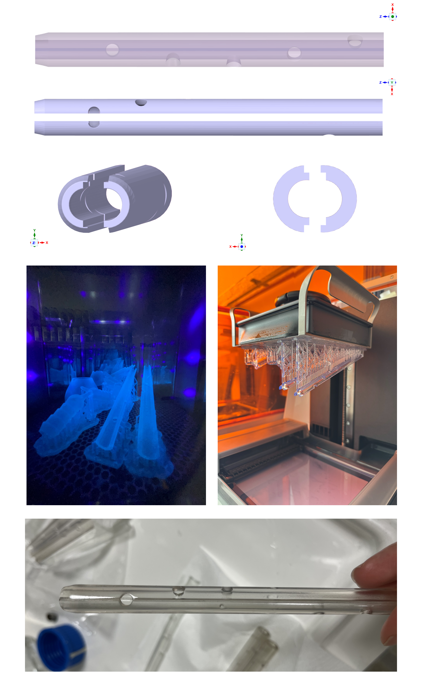
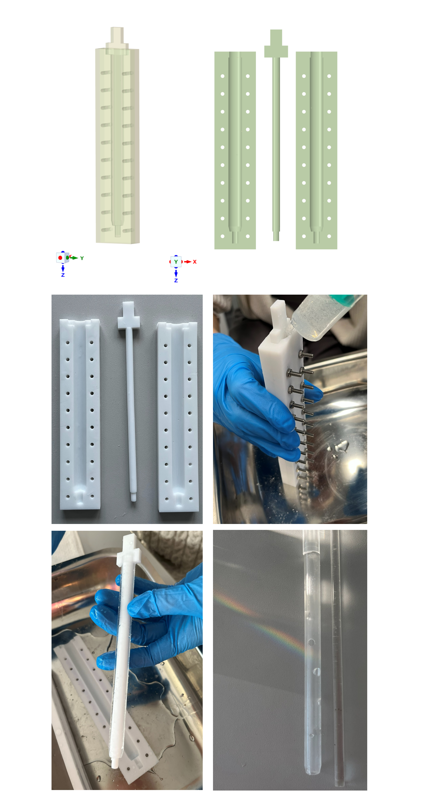
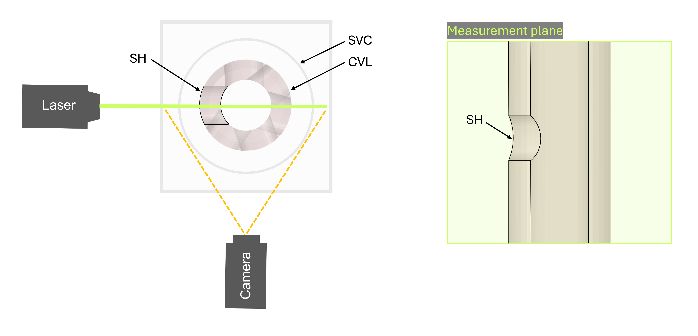
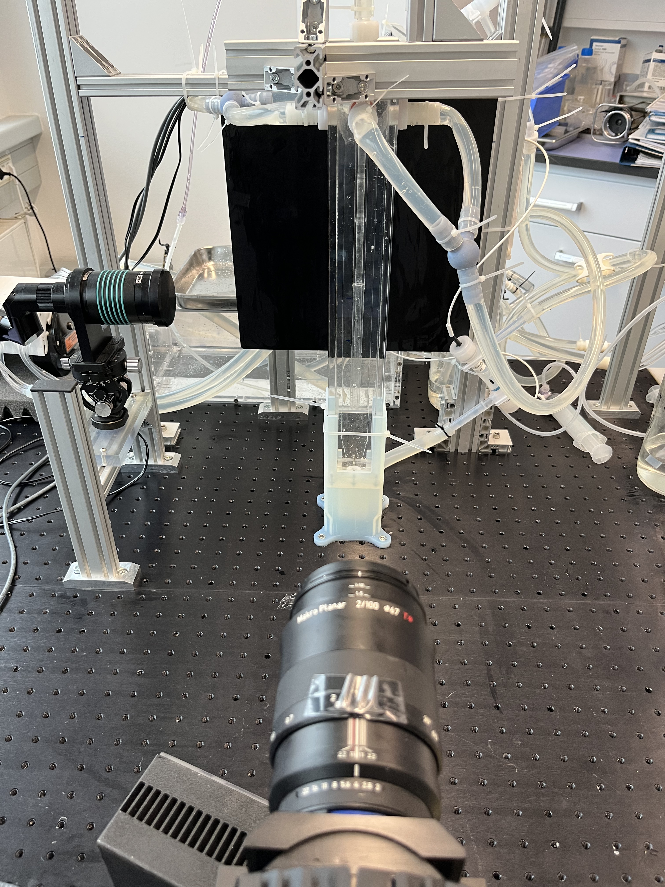

Experimental Validation of CFD Models
Overview
As a Visiting Researcher at the Institute for Implant Technology and Biomaterials e.V. in Rostock (Germany) I contributed to the experimental validation of CFD simulations of a paediatric haemodialysis catheter using Particle Image Velocimetry (PIV) measurements.
My contribution included the development and testing of different catheter prototypes, the adaptation of CAD geometries for 3D printing and experimental testing, and the comparison of experimental measurements with CFD predictions.
Workflow
Prototype Development
I scaled up the CAD models (original diameter: 2.17 mm) to simplify prototyping and adapted the geometries for 3D printing by splitting them into two interlocking parts. This allowed the prototypes to be assembled without adhesives. Splitting the catheters was necessary to facilitate polishing of the internal surfaces and ensure optimal transparency for the experiments. The models were printed in Formlabs Clear Resin using a Form 4 printer.

The same CAD models were also used to develop silicone prototypes. Based on the catheter CAD geometry, I designed a mould that was subsequently 3D printed. The mould included markers indicating the position of the side holes, which were subsequently punched into the silicone model. The silicone was then poured into the mould and cured.

Particle Image Velocimetry


CFD–PIV Comparison
Experimental PIV measurements were compared with CFD predictions to assess the consistency of the computational model and its ability to reproduce the experimentally observed flow behaviour.